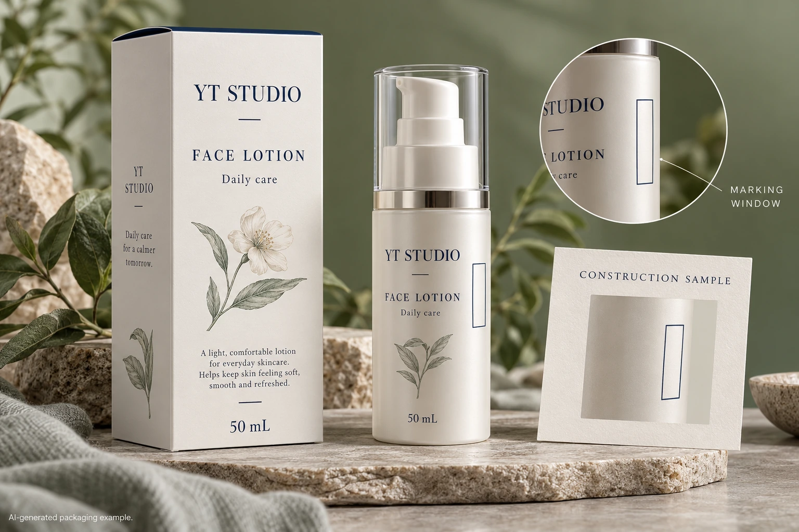

A blank rectangle in cosmetic label artwork is not evidence that a laser can mark it acceptably. Before reserving a production coding window, ask the coding specialist to evaluate the exact finished construction with the intended laser system and an identifiable sample.
The decision concerns the interaction between the marking route and the supplied label. It comes before approving an appearance reference as a production solution. A packaging engineer can organize that evidence without guessing laser power, speed or focus settings.

Identify what the beam would actually meet
Give the coding party the proposed face material, adhesive, printed areas, protective finish and any relevant backing or underlying pack. If the marking window omits one layer, mark that exception explicitly on the artwork. A generic film name does not fully identify the surface presented to the coder.
Videojet's cosmetics laser overview describes different laser families and material-dependent marking approaches. The bounded lesson is that laser technology and substrate suitability need to be matched. Its product examples do not prove that any particular YT Labels construction is laser-markable.
Ask the specialist to name the proposed mechanism and what its sample will demonstrate. Procurement does not need to choose a physical mechanism from a menu. It needs an accountable technical proposal that can be connected to the material being purchased.
Define the code before judging the window
Supply the approved content, character or symbol requirements, intended position and receiving use. A short human-readable batch field and a machine-readable symbol are different coding jobs. Keep data approval separate from whether the physical mark is visible.
State whether the sample must represent coding before or after the label is applied. Include the filled container and relevant production stage where the technical party requests them. Do not substitute an easy flat swatch and describe it as proof for a curved assembled pack without discussing the difference.
The batch-code panel guide covers position, content and general operation. This narrower review asks whether the intended marking technology can serve that panel on the actual construction. If the coding route changes, return the new requirements to the artwork owner before release.
Commission a sample with an explicit scope
Ask for the representative material and sample format required by the authorized coding team. Have that team define the trial under its equipment instructions, including the appropriate installation and safety arrangements. This article supplies no laser settings or instructions for operating or modifying equipment.
Agree the outputs before the trial. Identify the visual reference, required reading task, relevant handling or exposure questions and any concern about changes to the construction. Have the material supplier and coding specialist say which observations need further examination rather than accepting a good-looking code as the only criterion.
| Sample input | Record with the request | What the result can support |
|---|---|---|
| Construction | Exact face, print, adhesive and finish reference | Relevance to the quoted supply |
| Coding system | Named route and technical owner | An equipment-specific proposal |
| Pack stage | Flat label or identified applied container | Scope of the geometry and background represented |
| Content | Approved representative field or symbol | Whether the required information was evaluated |
| Evaluation | Agreed reading, appearance and material checks | The specific use that may be accepted |
| Remaining gap | Difference from production or unresolved observation | What must be closed before release |
Complete the left-hand inputs first, obtain a documented sample proposal, then review the same identified sample against the agreed outputs. Record a limited result as limited. A trial on a different laminate can be informative while leaving the selected laminate unresolved.
Let the construction and artwork teams review the same change
Suppose the coding specialist proposes a different coating arrangement in the window. Send that proposal to the converter and designer together. Ask which material reference, artwork layer or quoted scope changes. The brand should see any visible difference before accepting the new arrangement.
A change that improves the marking task may also change the appearance the brand originally approved. Conversely, keeping a decorative finish everywhere may leave the marking proposal unsupported. Those are choices to evaluate, not grounds for promising that every combination can be made to work.
Keep the accepted sample reference with the material specification and final artwork. An email saying laser approved is difficult to use later if it does not identify which construction and coding route were represented. A reorder should be checked for relevant changes rather than presumed equivalent because the bottle still looks familiar.
Compare a qualified laser route with a qualified alternative
A hypothetical program with an established, supported laser-material combination may have a clear route to a relevant sample and acceptance record. It should preserve that combination's identity rather than redesign the window without consulting the operator.
A new decorative construction with no relevant evidence has a different decision. The team can investigate a supported laser arrangement, revise the construction or compare another coding route. Asking for another supported coding proposal can be appropriate; it does not make inkjet automatically suitable either.
Hold the affected coding release if the sample construction is unidentified, the intended system is unknown or the required reading task has not been evaluated. Do not turn an unresolved laser question into a universal material performance claim.
For a cosmetic label inquiry, provide the container, label dimensions, quantity per artwork, proposed construction and coding party's requirement. Include the marked window, approved representative content and sample gaps. The form prepares a message; send files separately by email or WhatsApp. Ask what construction and evidence can be proposed before the window becomes a production commitment.